Motivating example - Your panel has 2 million responses and you need to find the duplicates.
- Naive approach: compare every response with every other
- Takes 2 × 10¹² comparisons, hours to days on a laptop
- One pass with the right data structure does it in seconds.
\(2 * 10^{12}\)comparisons, comparing every pair
\(2 * 10^{6}\)operations, with a hash set
Why is “have I seen this before?” is nearly free in one structure and hopeless in another?
Motivating example A codebook has 6,000 entries and your script looks up a code for each of 40 million observations. Checking the entries one at a time costs 6,000 comparisons per lookup. If the codebook is sorted, it costs 13.
6,000comparisons, scanning the list
13comparisons with binary search
460×less work but the list must be sorted
Why is this much faster and what is the problem if the codebook changes every day?
Definition Data types together with operations defined on these data that enable and realize access to and management of these data.
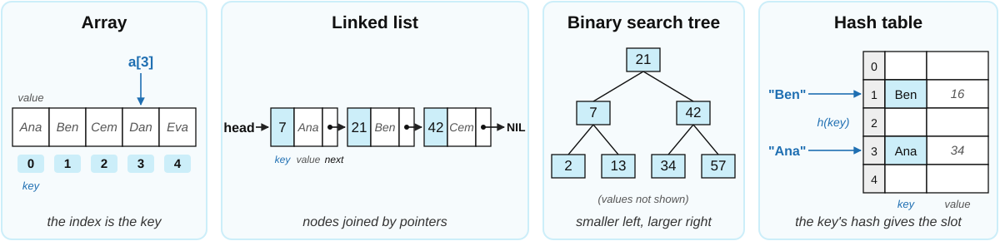
Definition Systematic arrangement of similar objects, usually in rows and columns.
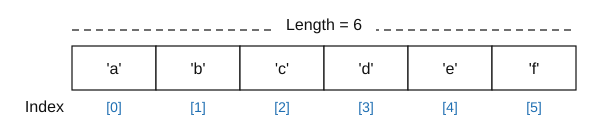
Advantages
Disadvantages
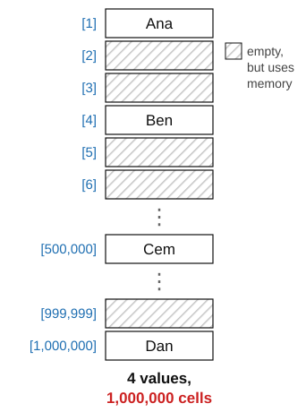
Definition Linear collection of data elements, called nodes, each pointing to the next node by means of a pointer.
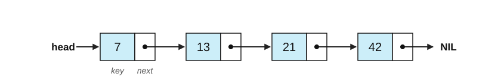
Deleting a node only changes the pointer of its predecessor.
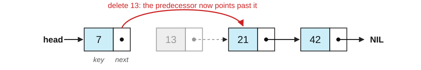
Advantages
Disadvantages
Remember: we don’t search just for keys, we also retrieve values associated with them
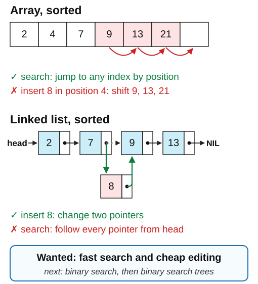
Definition: Binary Tree
A binary tree is a tree data structure that is either empty or it consists of a node (or root) \(S\) that has at most two children, which are referred to as the left child \(L\) and the right child \(R\), both of which are also binary trees.
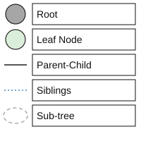
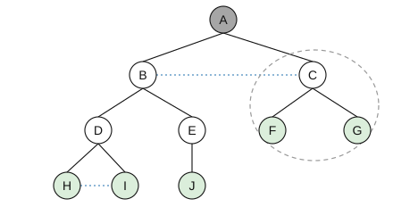
Definition: Binary Search Tree
A binary search tree is a binary tree with comparable keys where the key in the root has to be
The tree we will use as the running example: ten keys
the root has to be larger or equal to all keys in the left sub-tree and …
… strictly smaller than all keys in the right sub-tree
the root has to be larger or equal to all keys in the left sub-tree and …
… strictly smaller than all keys in the right sub-tree
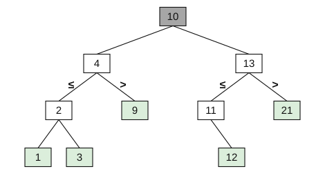
the root has to be larger or equal to all keys in the left sub-tree and …
… strictly smaller than all keys in the right sub-tree
Is this a binary search tree?
Is this a binary search tree? No!
15 is in the left sub-tree of 13 but larger than 13; 5 is in the left sub-trees of 2 and 4 but larger than both
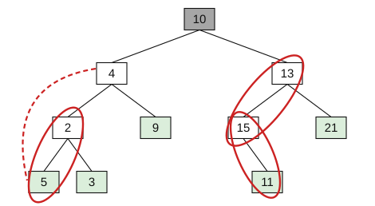
Searching for a given key:
Search for 11:
Searching for a given key:
Search for 11:
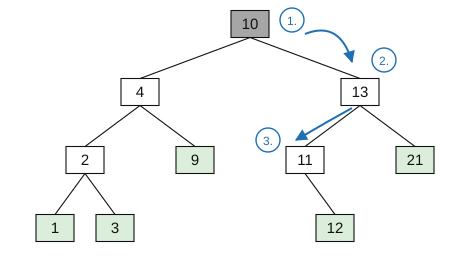
Add key 6:
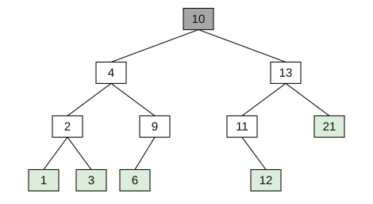
Delete key 6:
Delete key 6:
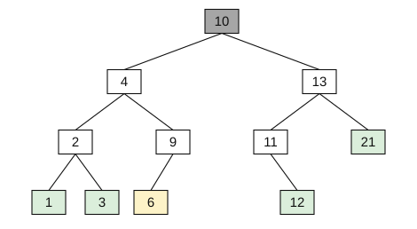
After deleting 6:
Delete key 11:
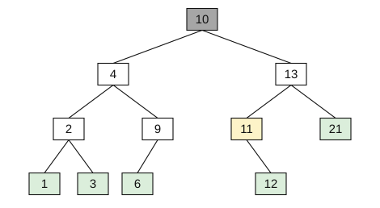
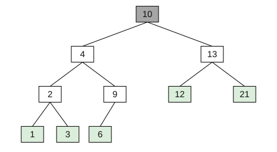
Delete the root 10:
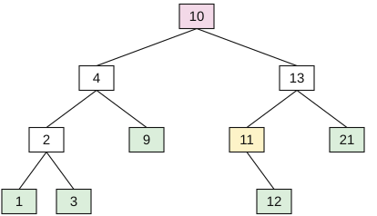
1. the leftmost key of the right sub-tree is 11
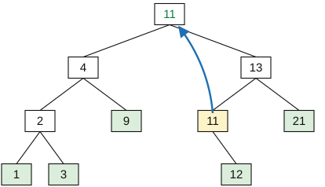
2. copy 11 into the root
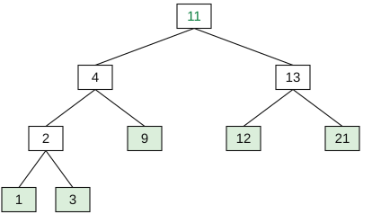
3. remove the old 11: its only child 12 takes its place
Advantages
Practical applications
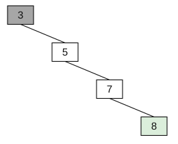
Definition: hash function A hash function \(h: K \rightarrow \{0, 1, \dots, m-1\}\) assigns to any given key \(k\) an index \(0 \leq h(k) \leq m-1\).
Requirements for \(h(k)\):
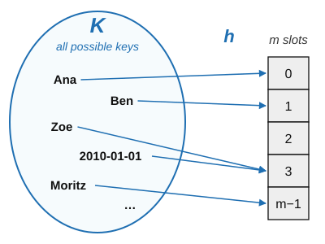
hash functions are usually based on natural numbers (with 0), i.e., usually direct calculation of the hash value of a given key (e.g., as a character string)
Operations on hash tables: each item says how to do one operation for a key \(k\)
Time required for operations: just one step in the best case
Hash collisions happen when two keys are mapped to the same position by the hash function
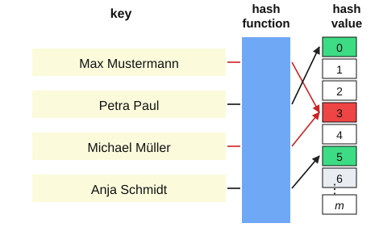
| key \(k\) | \(k \bmod 97\) | \(k \bmod 100\) |
|---|---|---|
| 20100101 | 52 | 1 |
| 20100227 | 81 | 27 |
| 20100427 | 87 | 27 |
| 20110527 | 2 | 27 |
| 20090811 | 74 | 11 |
| 20101224 | 11 | 24 |
| 20111111 | 4 | 11 |
| 20120229 | 4 | 29 |
| 20091224 | 2 | 24 |
Bold: collisions. \(\bmod 100\) keeps only the day
Separate chaining is one solution to collisions: every slot holds a linked list of all the keys hashed to it.
Operations on hash tables with separate chaining:
Time required for operations: just one step in the best case, \(n\) steps in the worst case
Dealing with hash collisions through separate chaining: each entry of the hash table is a linked list, and colliding entries are appended to it
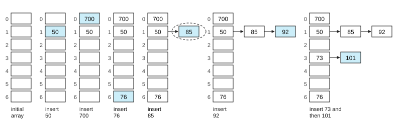
Example: \(m = 7\), \(h(k) = k \bmod 7\)
Open addressing stores every key in the table itself. Linear probing: if slot \(h(k)\) is taken, try \(h(k)+1\), \(h(k)+2\), … (mod \(m\)). Write in the first free slot; read by following the same probes until the key or an empty slot
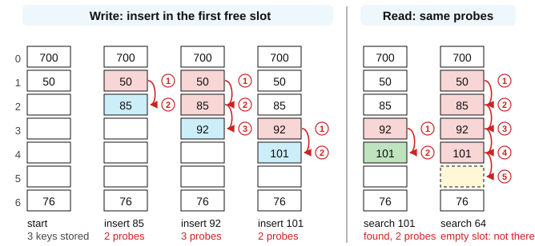
\(m = 7\), \(h(k) = k \bmod 7\); 700, 50 and 76 are already stored; circled numbers: order of probes
Random probing: if slot \(h(k)\) is taken, try \(h(k)+r_1\), \(h(k)+r_2\), … (mod \(m\)), with a fixed pseudo-random sequence \(r\) (here 3, 6, 2, 5, 1, 4) that a search can repeat. After inserting 92 the keys are spread out, not in one run
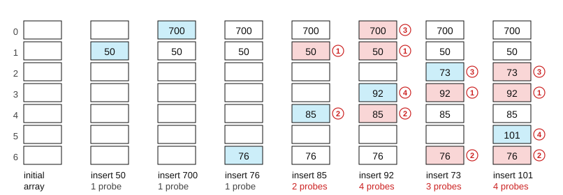
Keys 50, 700, 76, 85, 92, 73, 101 inserted in this order: \(m = 7\), \(h(k) = k \bmod 7\). Circled numbers give the order of the probes
dict grows when it is two thirds fullHome exercise. In the linear probing example, delete 85 by marking its slot as deleted. Then search for 92 and for 101: which slots are probed? Then insert 64: where does it go? What would go wrong if slot 2 were simply emptied?
Definition Abstract data type composed of a collection of (key, value) pairs, such that each possible key appears at most once in the collection.
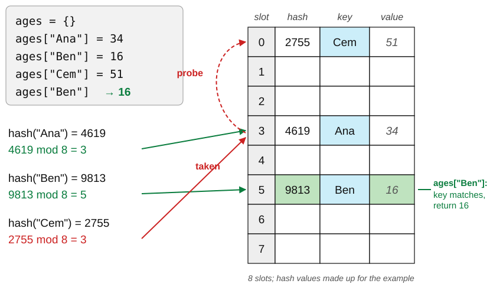
| name | wave | age | vote |
|---|---|---|---|
| Ana Weber | 1 | 34 | yes |
| Ben Koch | 1 | 27 | no |
| Clara Roth | 1 | 45 | yes |
| Ana Weber | 2 | 35 | no |
\(h\)(secret + name)
→
| person | wave | age | vote |
|---|---|---|---|
c3305900d9 |
1 | 34 | yes |
f61798a8f3 |
1 | 27 | no |
f109d00beb |
1 | 45 | yes |
c3305900d9 |
2 | 35 | no |
Brian Kernighan on hash tables: https://www.youtube.com/watch?v=qTZJLJ3Gm6Q
dict is a hash table: use it for lookups by key, lists for ordered sequencesNext session: Software: programming paradigms, good coding practices, software engineering
Procedure BINARY-SEARCH(A, n, x)
Inputs:
A: a sorted array
n: the number of elements in A
x: the value to find
Result: an index i with A[i] = x, or NOT-FOUND if x is not in A
p ← 1; r ← n
While p ≤ r:
q ← ⌊(p + r)/2⌋
If A[q] = x
then return q
else if A[q] > x
then r ← q - 1
else p ← q + 1
return NOT-FOUND
See Cormen (2013), pp. 28–30, for more on this algorithm
Procedure BINARY-SEARCH(A, n, x)
Inputs:
A: a sorted array
n: the number of elements in A
x: the value to find
Result: an index i with A[i] = x, or NOT-FOUND if x is not in A
p ← 1; r ← n
While p ≤ r:
q ← ⌊(p + r)/2⌋
If A[q] = x
then return q
else if A[q] > x
then r ← q - 1
else p ← q + 1
return NOT-FOUND
Use binary search to find 43
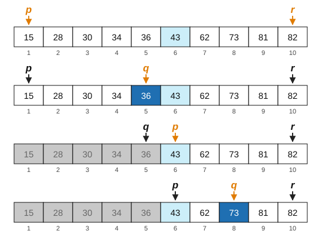
Procedure BINARY-SEARCH(A, n, x)
Inputs:
A: a sorted array
n: the number of elements in A
x: the value to find
Result: an index i with A[i] = x, or NOT-FOUND if x is not in A
p ← 1; r ← n
While p ≤ r:
q ← ⌊(p + r)/2⌋
If A[q] = x
then return q
else if A[q] > x
then r ← q - 1
else p ← q + 1
return NOT-FOUND
Use binary search to find 43
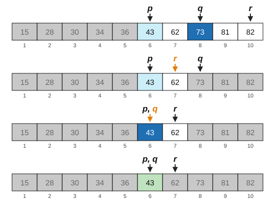
Session 03Introduction to Computing for the Social SciencesWinter Semester 2026-2027